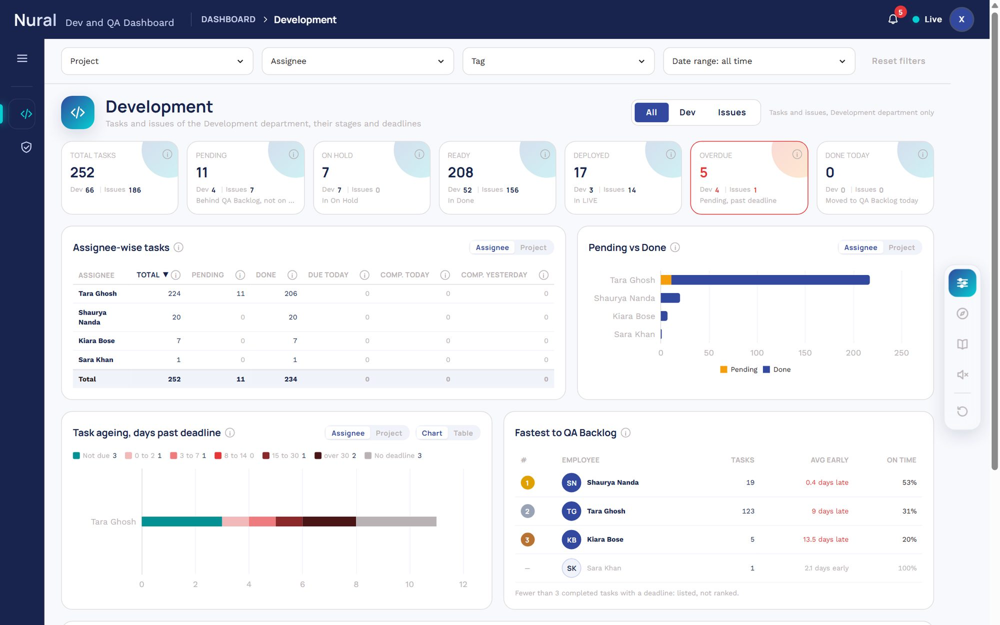
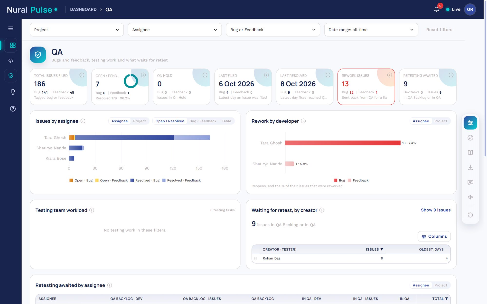
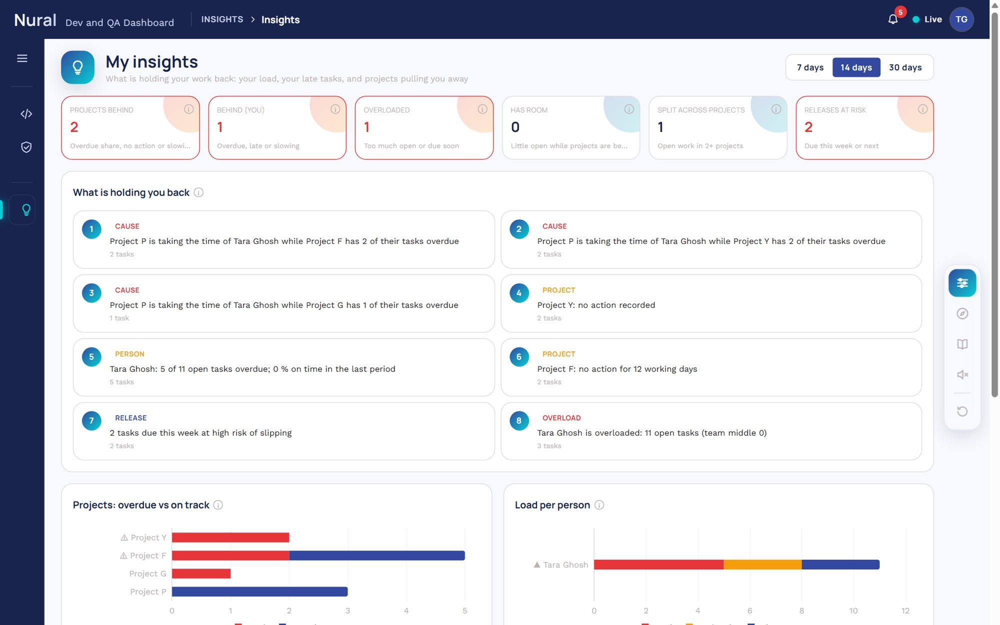
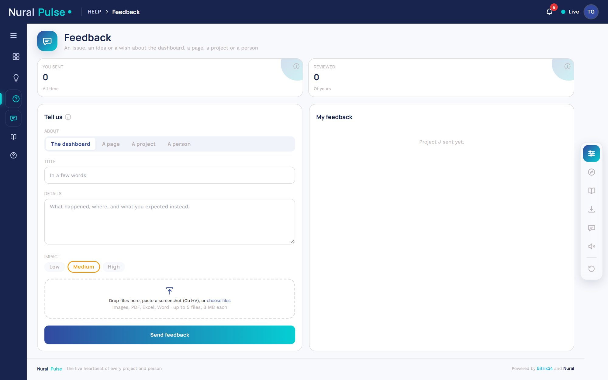
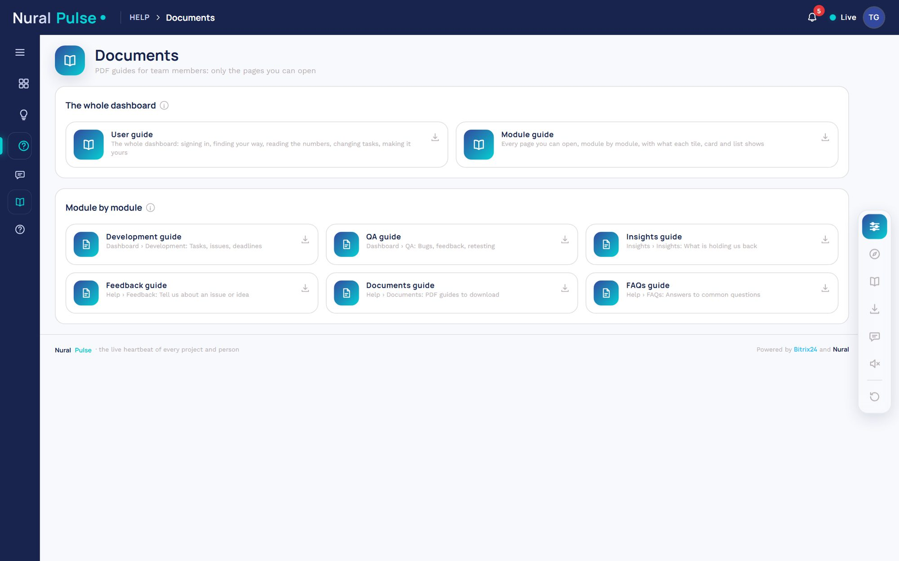
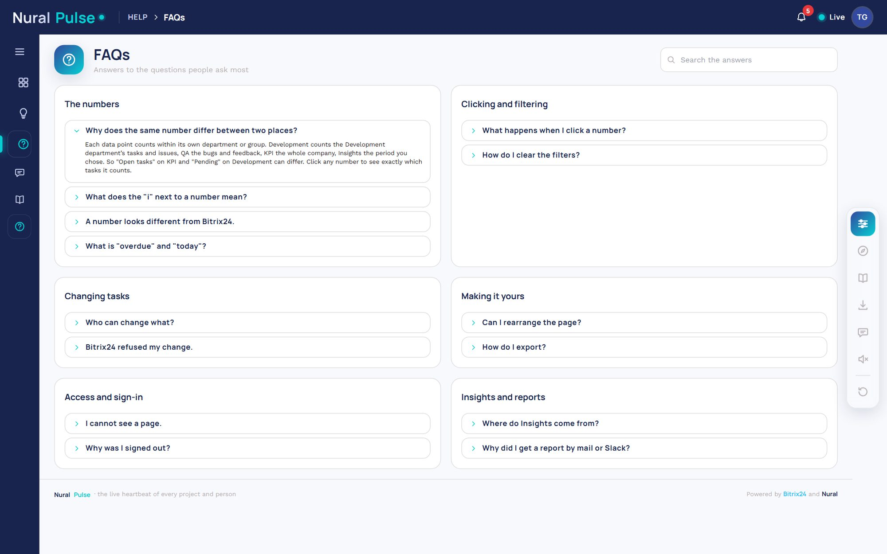

Every page you can open, module by module: what every tile, card and list shows and how to use it.
For Members
The parts every page shares
| Part | What it does |
|---|---|
| One number, two places | The same data point can show a different number on two pages, because each counts within its own department or group: Development counts the Development department, QA the bugs and feedback, KPI the whole company, Insights the period you chose. Click any number to see exactly which tasks it counts. |
| The menu | Every page, by module (Dashboard, Insights, Employees, Integration). The module of the page you are on is highlighted and open; click another module to open it. Drag ⠿ to put modules in your order, and pages within their own module. Hover the icons to open the menu; click ☰ to pin it open. |
| Filters | Project, assignee, tag and date range narrow every number on the tab, within your own tasks. The "i" icons say exactly what each number counts. |
| Alerts | The bell counts overdue tasks and tasks stuck over 5 days in one stage. Click it for the list and jump to the tasks. |
| Live | Live means changes in Bitrix24 reach the dashboard within seconds; numbers refresh by themselves. Offline means the connection dropped and it is reconnecting. |
| Page tools | On the right: Customise (choose the tiles and cards to show), the guided tour of this page, the PDF guides, Export page (every data point on the page as one Excel workbook or PDF), reading tours aloud, and resetting the layout. Hover any icon for its name. Each data point also has a small toolbar on hover: ⠿ to move it, ? to explain it, the eye to hide it. Tables have Columns (choose and order them) and ⠿ on each row to put rows in your own order. |
| Your profile | Your name and role, the theme (Light, Dark, System), live-update toasts, Reset layout, this tour (replay, voice on or off) and Sign out. You are signed out 3 days after signing in. |
Tasks, issues and deadlines
The Development department's tasks and issues. The All / Dev / Issues switch at the top steers every number.

| Data point | What it shows and how to use it |
|---|---|
| All, Dev or Issues | Development department only. Dev = development tasks, Issues = bugs and feedback, All = both. It changes every tile, card and list on this page (they glow now). |
| Projects | Every project active in Bitrix24 whose owner is in the Development or QA Testing department, or a PM (fixed: the switch and filters do not change it; only the Project filter narrows it) = Active + Silent + Hold. Hold: every unfinished task is in On Hold. Active: open tasks and a task changed or moved in the last 30 days (bulk changes left out). Silent: the rest (no open task, or no activity for 30 days). Click for Projects at work, most active this week first, then the earliest deadline: open a project for who works on it. Its Day / Week / Month switch sets Done (previous period), Overdue (this period) and Spill (previous period). |
| Total | Your tasks (assigned to you or created by you) for the switch. Click any count to list those tasks below. |
| Pending | Behind QA Backlog and not on hold: To do, In progress, Pushed to Master, Merged to Development, Pending for QA, Issue Raised. A testing or re-testing task in Issue Raised is not pending. Unassigned: those of them nobody has picked up yet (the placeholder assignee); click to list them. Click any count to list those tasks below. |
| On hold | In On Hold: neither pending nor completed. Pending + completed + on hold = total. |
| Ready to deploy | In the Done stage, ready to go live. Then Deployed: in the LIVE stage. |
| Overdue | Pending, not On Hold, and the deadline has passed. The first number to act on each day. |
| Done today | Reached QA Backlog for the first time today (IST). |
| Tasks in hand | Pending tasks (behind QA Backlog, not on hold) whose deadline is still ahead (IST). Under it, when they are planned: tomorrow, the rest of this week, the rest of this month, next week, next month. The parts overlap (tomorrow is also in the rest of the week), so they do not add up. Overdue and no-deadline tasks are not in hand. Click the tile for the planner: day, week or month columns per person (with the projects they work on) or per project (with who works on it), overdue first in red. |
| Tasks in hand by assignee | Pending tasks with the deadline ahead, per assignee or project. The chart shows the window picked above it (All, Tomorrow, Rest of week, Rest of month, Next week, Next month); the table shows every window. A bar or count opens those tasks; a name sets the filter. |
| Per person or project | Per person or project. Done = sent to QA (QA Backlog to LIVE). Comp. today = reached QA Backlog today. Switch Assignee / Project at the top. Every count opens its tasks. Click the title to focus it in the centre; drag ⠿ at the top to move it. |
| Pending vs Done | Pending vs completed (QA Backlog, In QA, Done, LIVE) per person or project, top 15 by total. Tooltip splits Dev / Issues (Bug / Feedback on Issues). Click a bar to open those tasks. |
| Task ageing | Open tasks by days past deadline. On Hold counts here but not as Overdue. The darker the red, the later. Chart or Table at the top. |
| On-time ranking | Tasks sent to QA with a deadline. Ranked by on-time %, then average days early. Fewer than 3: not ranked. |
| Tasks by stage | Tasks per Kanban stage; the colour bar shows each stage total. The red part of a cell is overdue. Click a cell for those tasks. |
| Task lists | Due today, Overdue, All tasks and Alert details open here. Clicking any number above opens All tasks narrowed to it. In a list you can change stage, status and tags of your tasks, tick rows for bulk edit, and export to Excel. |
Due today, Overdue, All tasks (follows the last number you clicked) and Alert details. Each list sorts, edits in place, bulk edits, pages and exports to Excel.
Bugs, feedback, testing and retesting
Bugs and feedback (tasks tagged bug or feedback), testing work and the retest queue. The Bug or Feedback filter narrows the page.

| Data point | What it shows and how to use it |
|---|---|
| Issues filed | Bugs and feedback assigned to you or filed by you. Click any count to list those tasks below. |
| Tasks in hand | The QA Testing team's pending testing tasks whose deadline is still ahead (IST), by when they are planned: tomorrow, the rest of this week, the rest of this month, next week, next month. The parts overlap, so they do not add up. Click the tile for the planner: day, week or month columns per person (with the projects they work on) or per project (with who works on it), overdue first in red. |
| Tasks in hand by assignee | The testing team's pending tasks with the deadline ahead, per assignee or project. The chart shows the window picked above it; the table shows every window. A bar or count opens those tasks; a name sets the filter. |
| Open / pending | Open = pending: any stage behind QA Backlog except On Hold (Issue Raised included). Resolved = QA Backlog, In QA, Done or LIVE. On Hold is its own tile. The ring shows the resolved %. Unassigned: those of them nobody has picked up yet (the placeholder assignee); click to list them. Click the tile for the open issues by project: open a project for who filed them, and a creator for who has them, each with Pending and Overdue. |
| On hold | In On Hold: neither pending nor completed. Pending + completed + on hold = total. |
| Last filed and resolved | Latest day an issue was created, and how many that day. Click for that day by project: open a project for who filed its issues (bug and feedback), and a creator for who they went to. Next to it, Last resolved: Latest day issues were pushed to QA Backlog (a fix handed to QA), and how many that day. |
| Rework | Issues QA sent back after testing: from QA Backlog, In QA or Done to Issue Raised, To do or In progress. Stage flow only. |
| Retesting awaited | Every task waiting for QA: in QA Backlog or In QA, split into dev tasks and issues (bug or feedback). The QA team's queue. |
| Issues by person | Open vs resolved, each split into bug and feedback (or the reverse), per person or project. Table: the assignee-wise table. Click the title to focus it in the centre; drag ⠿ at the top to move it. |
| Rework by developer | QA send-backs per person or project, split into bug and feedback, and the % of their issues sent back. First Issue Raised to To do is not counted. |
| Testing tasks | Tasks tagged testing or re-testing, or assigned to QA Testing. Late = pending past deadline. A testing or re-testing task in Issue Raised is "Issue raised": not pending, never late. |
| Waiting for retest | Issues in QA Backlog or In QA, by who filed them. Oldest = days waiting. |
| Retest queue by person | Tasks and issues in QA Backlog and In QA per assignee or project. Every number opens its tasks. |
| Issue trend | Last 7 days (IST): bugs and feedback filed (created, light) and resolved (pushed to QA Backlog that day, dark). Pick one assignee or project, or see all. Click a point for that day's issues. |
| Issue ageing | Open issues by days past deadline (same as task ageing). On Hold counts here. |
| Issues by stage | Issues per stage and person (or project). Red = overdue part. Bug / Feedback narrows it. |
| Issue lists | Latest filed, Latest resolved and All issues. Any number above opens All issues narrowed to it. Edit in place, bulk edit and Excel export work as on Development. |
Latest filed, Latest resolved and All issues (follows the last number you clicked), with the same editing and export as on Development.
Plan, wrap up, post to Slack
Your morning plan and evening wrap-up, opened from the Daily update icon in the page tools and posted to the daily work update group on Slack. The page lists your last 30 days.
| Data point | What it shows and how to use it |
|---|---|
| Plan your day | Open it from the Daily update icon in the dock: what carries over from your last plan (still pending or WIP), your overdue and due-today tasks, and upcoming ones you can take on early. Change any task right in its row (stage, status, tags…), keep, remove or add, write a note and post it to the daily work update group on Slack. You can open it all day to see and change your plan. |
| Wrap up your day | In the evening from the same icon, or when you sign out, your plan comes back with each task Pending, WIP, Done or On hold (from its stage). Report one as Done to complete it in Bitrix24, add tasks you finished ahead, and work outside the plan becomes a Bitrix24 task assigned to you. Then it goes to the same Slack thread. |
| My last 30 days | Each day you posted: tasks planned, done, WIP and outside the plan. Open the Daily update any time from its icon in the dock on the right. |
What is holding us back
Findings from Bitrix24 and dashboard data, ranked: causes first (projects pulling people away), then releases at risk, lagging projects, overload, lagging people and people with room. Period: 7, 14 or 30 days. Every finding opens its tasks.

| Data point | What it shows and how to use it |
|---|---|
| Insights | What is holding your work back. 7, 14 or 30 days sets how far back your activity is looked at: it changes the glowing data points; overload, split work and the release plan are as of now. |
| At a glance | Lagging projects and people, the overloaded, those with room to help, people split across projects and releases at risk. Click a tile for the projects or people it counts, with why each is there; click one of them for its tasks. |
| What is holding us back | Your findings ranked, causes first: a project taking your time while your tasks in another go overdue, then your late work and releases at risk. Click one for its tasks. |
| Projects | Open tasks per project with the overdue part; ⚠ marks a lagging project. Hover for why; click for the tasks. |
| Load | Open tasks per person: overdue, due in the next 5 working days and the rest. ▲ overloaded, ▽ has room to take tasks over. |
| Projects pulling people away | Who has open work in several projects, how much they do in each, and which project is taking their time while another goes overdue. |
| Release plan | Tasks due this week and next with their planned date, stage and risk of slipping. Click a row for the task. |
| Leave and attendance | From Infowan once connected: leave, late arrivals and early leaving, and the tasks and projects they put at risk. Until then insights use Bitrix24 data. |
| Finding | Rule |
|---|---|
| Lagging project | 3+ overdue and 25 % or more of its open tasks; or no action for 10+ working days; or closing half or less of the period before. |
| Lagging person | 3+ overdue and 30 % or more of their open tasks; or under 50 % on time; or closing half or less of the period before with 5+ open. |
| Overloaded | 10+ open and twice the team median, or 8+ due in the next 5 working days. |
| Has room | 2 or fewer open and closed while one of their projects has overdue work. |
| Pulling people away | One project takes 70 % or more of a person's actions while their tasks in another project are overdue. |
| Release risk | Open tasks due this week or next: high if overdue, or not started and due within 2 working days. |
Stages and what they count as
The stages a task moves through, in order: what each counts as (pending, on hold or completed), the part it plays, who works in it and the usual moves. Admins change it; every number follows.
| Data point | What it shows and how to use it |
|---|---|
| How work flows | A task moves left to right through the Kanban stages to LIVE. Each lane is a department: the PM or team lead plans it (To do), Development builds it (In progress, Pushed to Master, Merged to Development, Pending for QA), QA tests it (QA Backlog, In QA, Done, or Issue Raised to send it back) and Release puts it live. Solid arrows are the usual moves, red dashed ones QA sending work back. The band underneath shows what each stage counts as. Click a stage for details. |
| One stage | What the stage means, who acts there, where it moves on to, the board column names that mean it, and which numbers on the dashboard it feeds. |
| Who does what | Each department and the stages where the next step is theirs. |
| Edit the workflow (admins) | Admins change the stages: order, names, departments, what each counts as, its roles, column names and arrows, and the rework rule. Once saved, every number on every page counts with it. Every version is kept and can be restored. |
Projects grouped by their boards
Each project type with its rule (the stages its board must or must not have) and its projects. A board column the workflow does not know is outlined in red.
| Data point | What it shows and how to use it |
|---|---|
| Projects that differ | Most projects follow the full development flow to LIVE. Support desks, DevOps and personal projects use short boards (New › In progress › Finished), others skip the code or release stages. Their numbers follow the same rules, with fewer stages. |
| Projects by type | Each type with its rule and its projects. Every project shows its own columns and the stage each counts as; a column the workflow does not know is outlined in red. Admins set a project’s type by hand, map an unknown column to a stage, and edit the types. |
Issues and ideas, with attachments
Send feedback about the dashboard, a page, a project or a person (only those you can see), with up to 5 attachments of 8 MB: images (paste a screenshot with Ctrl+V), PDF, Excel, Word. My feedback shows what you sent and the reply. The Feedback inbox (admins, PM and team leads) reads everyone's, replies and exports to Excel.

| Data point | What it shows and how to use it |
|---|---|
| Tell us | An issue, an idea or a wish: about the dashboard, a page, a project or a person (only the ones you can see). Add screenshots (paste them with Ctrl+V), PDF, Excel or Word files, up to 5. |
| My feedback | What you sent, whether it has been reviewed, and the reply. |
The PDF guides
The guides for your level of access: the whole dashboard (User guide, Module guide) and one short guide per page you can open.

| Data point | What it shows and how to use it |
|---|---|
| Guides | PDF guides for your level of access: the whole dashboard, and module by module. Only the pages you can open are in them. |
Common questions
Answers by topic: the numbers, clicking and filtering, changing tasks, making it yours, access and sign-in, Insights and reports. Search at the top.

| Data point | What it shows and how to use it |
|---|---|
| FAQs | Answers to the questions people ask most, by topic. Search at the top. |
The rules behind the numbers
| Term | Rule |
|---|---|
| Pending | Behind QA Backlog and not on hold: To do, In progress, Pushed to Master, Merged to Development, Pending for QA, Issue Raised. A testing or re-testing task in Issue Raised is not pending. Unassigned: those of them nobody has picked up yet (the placeholder assignee); click to list them. |
| On hold | In On Hold: neither pending nor completed. Pending + completed + on hold = total. |
| Completed (done) | Completed: in QA Backlog, In QA, Done or LIVE. |
| Overdue | Pending, not On Hold, and the deadline has passed. |
| Done today | Reached QA Backlog for the first time today (IST). |
| Due today | Deadline is today (IST), in any stage except LIVE. |
| Rework | Issues QA sent back after testing: from QA Backlog, In QA or Done to Issue Raised, To do or In progress. Stage flow only. |
| Retesting awaited | Every task waiting for QA: in QA Backlog or In QA, split into dev tasks and issues (bug or feedback). |
| Testing tasks | Tasks tagged testing or re-testing, or assigned to QA Testing. Late = pending past deadline. A testing or re-testing task in Issue Raised is "Issue raised": not pending, never late. |